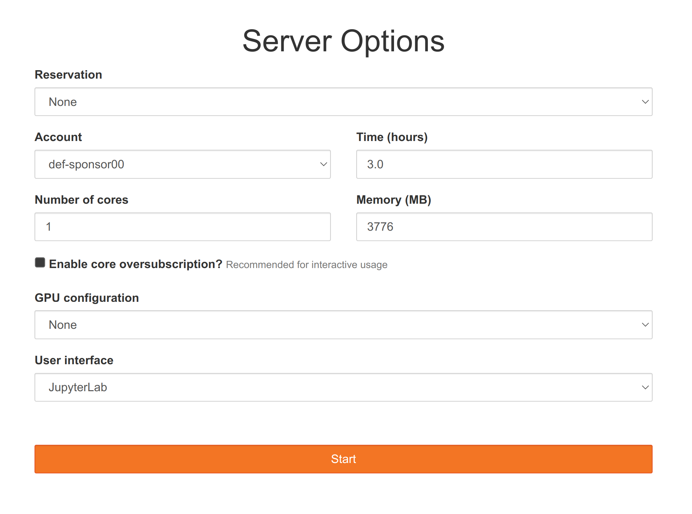

Running Python
This section covers some of the many ways to run Python either on your machine or on the Alliance clusters.
On your machine
Non-interactive Python
You can write your Python code in a text file with a .py extension and run the script in your terminal with:
python <script-name>.pyInteractive Python
One key reason why Python is so popular is that it is an interpreted language: you can use it in an interactive session that makes prototyping code very friendly.
One way to do this is to use a shell.
Shells
Python shell
The simplest (and driest) way to run Python interactively is to use the Python shell. If you launch Python by double-clicking on the Python executable or running the command python in a terminal, you end up in the Python shell with its typical >>> prompt.
Although the Python shell finally saw minor improvements with the release of Python 3.13, this shell is still extremely primitive:
- no syntax highlighting,
- no multiline editing,
- austere autocompletion.
For this reason, a number of shells have been developed by external parties to improve the experience of using Python in the terminal.
IPython
IPython is a greatly improved shell with more functionality (e.g. syntax highlighting, nicer completion interface, magic commands).
You can install IPython and launch it instead of launching Python by running ipython in your terminal.
Now that everybody is using Jupyter (see below), using the IPython shell directly has fallen out of fashion, but it is actually one of my favourite methods to run Python.
ptpython
ptpython is an even more fancy Python shell that is highly customizable and offers amazing autocompletion, multiline editing, mouse support, beautiful colour schemes, and more.
You can also combine ptpython with IPython by running ptipython.
bpython
bpython is another interface for the Python shell with a different style and feel.
Xonsh
Xonsh allows to mix Python and Bash in the same commands.
IDEs
A more sophisticated way to run Python interactively is to use an integrated development environment (IDE). In addition to providing an improved shell, IDEs make writing scripts or other documents convenient, they provide ways to send sections of scripts to the Python shell, and they might come with their own file system interface.
Jupyter
The IPython shell was integrated into a fancy interface, the Jupyter notebook. This later lead to a fully fledged IDE (integrated development environment) called JupyterLab which contains notebooks, a command line, a file explorer, and other functionality.
You can install JupyterLab, launch it by running jupyter lab in a terminal and the IDE will open in your browser.
Even though JupyterLab runs in your browser, it does not use internet: it is all run locally.
marimo
marimo is a new type of Python notebooks that solves some of the downsides of Jupyter notebooks (e.g. no hidden states, saved as .py files, built-in interactive widgets, support for interactive plots, easy deployment as web apps, powerful query system).
I gave a webinar on marimo in November 2025.
Text editors
Jupyter has probably become the most popular IDE, but it is possible to run Python in other IDE such as Emacs.
Quarto
The very popular RMarkdown developed by Posit (formerly RStudio Inc) lead to a new and more powerful tool called Quarto. Quarto runs code blocks of R, Julia, and Python in markdown documents which can be rendered into websites, pdfs, presentations, and more (this website is built with Quarto).
Under the hood, Quarto runs Jupyter notebooks, so it is in fact IPython running in Jupyter that executes the Python code in Quarto.
On Alliance clusters
Non-interactive Python
You can SSH into an Alliance cluster, load the Python module with the Python version of your choice (use module spider python to find the module, then module load to load it), write a Python script, an sbatch script and run your code with a batch job as you saw in our HPC course. This is covered in detail in a later section.
Interactive Python
Python shell
Similarly, if you SSH to a cluster, load the Python module of your choice, then launch an interactive job with salloc, you can run the Python shell.
IPython
To use IPython, load the IPython module of your choice (module spider ipython to find it, module load to load it), launch an interactive job with salloc, and finally launch the IPython shell by running ipython in the terminal.
Jupyter
To use JupyterLab on a cluster, you use what is called a JupyterHub: a set of tools that spawn and manage multiple instances of JupyterLab servers. Under the hood, they manage an interactive job used by your JupyterLab server.
Let’s try it on our training cluster.
Launch JupyterLab
Claim a username
Go to the etherpad that we will share during the course and claim a username by adding your first name or a pseudo next to a free username on the list.
Your username is the name that was already on the list, NOT what you wrote next to it (which doesn’t matter at all and only serves at signalling that this username is now taken).
Your username will look like userxx—xx being 2 digits—with no space and no capital letter.
Log in
- go to the URL we will give you during the course,
- sign in with your new username and a password that we will give you during the course,
- leave OTP blank,
- log in.
Launch a job
This will take you to server options page:

- Change the time to 2.0 hours,
- press start.
Note that, unlike other JupyterHubs you might have used (e.g. Syzygy), this JupyterHub is not permanent and will be destroyed at the end of the summer school.
End a session
If you don’t need all the time you asked for after all, it is a great thing to log out (the resources you are using on this cluster are shared amongst many people and when resources are allocated to you, they aren’t available to other people. So it is a good thing not to ask for unnecessary resources and have them sit idle when others could be using them).
To log out, click on File in the top menu and select Log out at the very bottom.
If you would like to make a change to the information you entered on the server option page after you have pressed start, log out, log back in, edit the server options, and press start again.
Start a Python notebook
To start a Jupyter notebook with the Python kernel, click on the button Python 3 in the Notebook section (top row of buttons).
The Jupyter interface
In a fashion Vi users will be familiar with, Jupyter notebooks come with two modes: edit mode in which you can type text as usual and command mode in which many keys are shortcuts to specific actions.
Here are some useful key bindings to navigate a Jupyter notebook:
Enter enter edit mode
Esc enter command mode
# in edit mode
Tab code completion
# in command mode
up navigate up
down navigate up
Shift+up select multiple cells up
Shift+down select multiple cells down
a insert a new blank cell above
b insert a new blank cell below
c copy the current or selected cells
x cut the current or selected cells
v paste the copied or cut cells
m turn the cell into a markdown cell
y turn the cell into a code cell
Shift+m merge selected cells
# in either mode
Ctl+Enter run the current cell
Shift+Enter run the current cell and move to a new cell below